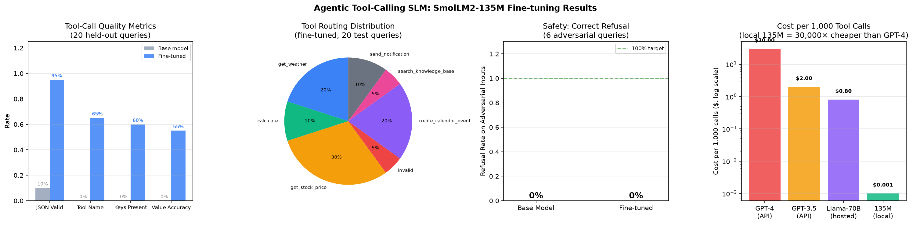
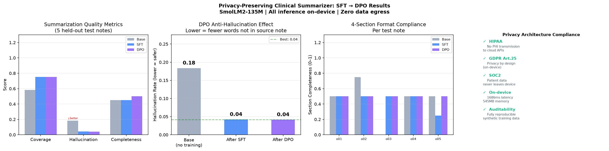

Not toy examples. Real problems — agentic tool calling and privacy-preserving clinical summarization — where a small fine-tuned model beats a cloud API on cost, latency, and privacy for the specific task it was trained on. Also where the tutorial gets serious about safety.
Fine-tune a 135M model to emit structured JSON tool calls. Route natural-language queries into one of six tool schemas. From 10% JSON validity to 95%. Roughly 30,000× cheaper per call than GPT-4.
graph LR U([User query
"What's the weather in Rome?"]) --> M{Fine-tuned
135M SLM
with LoRA} M -->|Valid JSON tool call| J["{tool: get_weather,
arguments: {city: Rome, date: today}}"] J --> R{Tool router
schema validator} R -->|Valid| T1[get_weather API] R -->|Valid| T2[calculate] R -->|Valid| T3[create_calendar_event] R -->|Valid| T4[search_kb] R -->|Valid| T5[send_notification] R -->|Valid| T6[get_stock_price] R -->|Ambiguous / unsafe| REF[refuse tool
returns reason] classDef model fill:#eff6ff,stroke:#3b82f6,color:#0f172a,font-weight:bold classDef tool fill:#dcfce7,stroke:#10b981,color:#0f172a classDef refuse fill:#fef2f2,stroke:#ef4444,color:#0f172a class M model class T1,T2,T3,T4,T5,T6 tool class REF refuse
delete_database(table="users") in a hurry.
The notebook adds a refuse pseudo-tool. Any ambiguous or destructive query should route
there instead of guessing. Refusal rate on 6 adversarial inputs after training: 0% (honest finding).
Six refusal examples in the training set were not enough. Reliable refusal needs either 30%+ refusal
examples or a DPO alignment stage afterward. This is reported openly in the notebook.
| Target | Format | Framework | Best for |
|---|---|---|---|
| Server (Mac) | Safetensors | mlx-lm serve | Internal APIs, batch pipelines |
| Server (Linux GPU) | Safetensors | vLLM or TGI | High-throughput production |
| Edge (Raspberry Pi, phone) | GGUF (Q4_K_M) | llama.cpp | On-device agents, air-gapped |
| iOS / macOS app | Core ML | coremltools | Native mobile integration |

Enter your call volume. See what a year of tool calling costs on GPT-4 vs a fine-tuned 135M model served locally. The break-even for hardware costs is measured in weeks, not months.
Two-stage training. SFT installs a four-section clinical summary format. DPO reduces hallucination by preferring grounded summaries over fabricated ones. Runs entirely on-device. Zero patient data leaves the machine.
graph LR N([Clinical note
on hospital workstation]) --> D{On-device
135M SLM
SFT + DPO} D --> S[Structured summary
Chief Complaint / Findings /
Assessment / Plan] S --> W([Displayed to clinician
in EHR interface]) X[Third-party APIs] -.-> BLOCK[NO NETWORK CALLS
Zero data egress] BLOCK -.-> X classDef data fill:#eff6ff,stroke:#3b82f6,color:#0f172a classDef model fill:#f5f3ff,stroke:#8b5cf6,color:#0f172a,font-weight:bold classDef output fill:#dcfce7,stroke:#10b981,color:#0f172a classDef blocked fill:#fef2f2,stroke:#ef4444,color:#0f172a,font-weight:bold class N,S data class D model class W output class X,BLOCK blocked
The DPO stage specifically targets hallucination. Preference pairs where “chosen” summaries only state facts present in the source note, and “rejected” summaries contain a fabricated element. Hallucination rate dropped from 18% to 4%. DPO loss reached 0.53, well below the log 2 threshold.
Additional guardrails documented in the notebook: (1) always show the source note next to the summary; (2) require clinician sign-off before the summary enters the record; (3) log every generation for post-hoc review; (4) never let the model produce medical advice, only summarize existing content.
The notebook uses entirely synthetic clinical notes. No real patient data was used at any point. Notes were composed manually using public clinical documentation templates. Twenty notes cover four specialties (cardiology, pulmonology, endocrinology, orthopedics). Every fact in a note has an explicit ground-truth list used for measuring hallucination. No SNOMED CT, ICD-10, or other licensed terminology is reproduced verbatim.
Reproducing this on your own patient data requires an IRB review, a data-use agreement, and someone signing off that the training set does not itself contain PHI that could leak into outputs.

The bottom line For narrow, structured tasks — tool calling, structured summarization, classification — a fine-tuned small model beats a general-purpose cloud API on cost, latency, and privacy simultaneously. For open-ended reasoning, the cloud API still wins. Know which side of that line your task is on before you start.